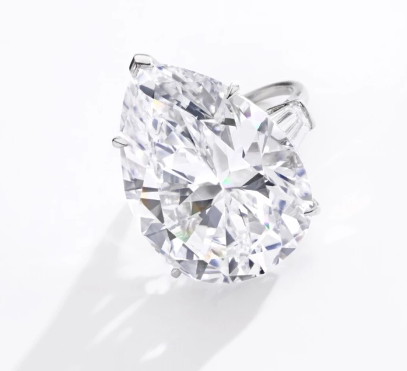
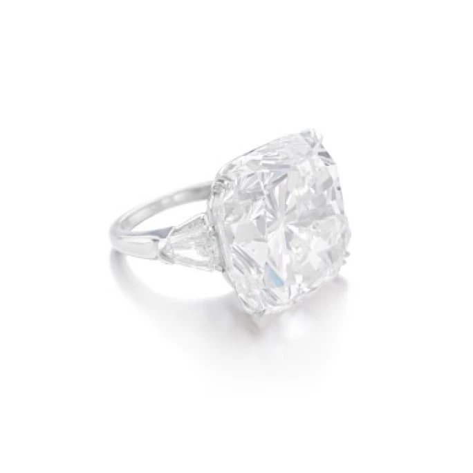
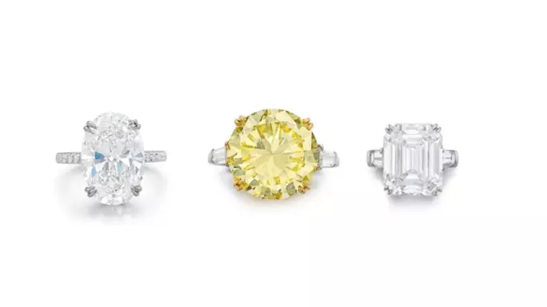

譯自 Lydia Dokko · Sotheby's
細賞蘇富比拍賣史上最矚目的五大海瑞溫斯頓戒指傑作，領略「珠寶之王」的非凡魅力。
珠寶界的傳奇篇章
海瑞溫斯頓，這位被譽為「終極珠寶大師」的傳奇人物，生於紐約，自幼在父親的珠寶行中浸潤成長。1920 年，他在第五大道創立「第一鑽石公司」。憑藉獨到慧眼，溫斯頓在各大遺產拍賣會上發掘蒙塵的瑰寶，透過重新切割為其注入新生，重現光華，迅速在珠寶界建立聲譽。其獨特的設計風格很快便贏得上流社會、荷里活巨星與藏家的傾心青睞。1947 年，《柯夢波丹》雜誌更將他譽為「鑽石之王」。時至今日，海瑞溫斯頓的戒指依舊是藏家夢寐以求的珍品，亦是眾多名流雅士的心頭好；伊麗莎白·泰勒（Elizabeth Taylor）、瑪麗蓮·夢露（Marilyn Monroe）、妮可·基嫚（Nicole Kidman）和珍妮佛·羅培茲（Jennifer Lopez），無不為其傾倒。

海瑞溫斯頓訂婚鑽石戒指
五大拍場瑰寶
讓我們一同品鑒自 2017 年以來，在蘇富比拍場上最耀眼的五大海瑞溫斯頓戒指：
1. 海瑞溫斯頓淡彩粉紅色鑽石戒指｜1,400 萬美元

海瑞溫斯頓 1970 年代淡彩粉紅色鑽石戒指
2017 年，一枚非凡的 33.36 克拉淡彩粉紅色鑽石以 1,260 萬瑞士法郎（約合 1,400 萬美元）的天價成交，創下同類珍品的世界拍賣紀錄。淡彩粉紅色鑽石本就極為罕見，而這枚瑰寶更因完美無瑕的切工與近乎完美的淨度，更顯非凡。這件由海瑞溫斯頓於 1970 年精心打造的傑作，採用罕見的祖母綠階梯式切割，配以 VVS1 極致淨度。由於階梯式切割對鑽石淨度要求極高，如此碩大的粉紅鑽石採用祖母綠切割更是難能可貴。這枚瑰寶不僅展現了大自然的鬼斧神工，更彰顯了海瑞溫斯頓無與倫比的工藝造詣。
2. 海瑞溫斯頓梨形鑽石戒指 | 370 萬美元

海瑞溫斯頓梨形鑽石戒指
2017 年，這枚獨特的梨形鑽石戒指在蘇富比以 330 萬瑞士法郎（約合 370 萬美元）成交。主石為 32.42 克拉的梨形鑽石，擁有最高等級的 D 色與 VVS1 淨度；如此巨大的鑽石能達至近乎內部無瑕的品質，實屬珍罕。這顆約莫小番茄大小的主鑽，兩側配以錐形長階梯形鑽石，盡顯優雅華貴。
3. 海瑞溫斯頓「克什米爾」藍寶石戒指 | 250 萬美元

枕形藍寶石戒指
2024 年，這枚非凡的藍寶石戒指在香港蘇富比以 1,980 萬港元（約合 250 萬美元）的價格成交。戒指鑲嵌著 16.65 克拉的枕形藍寶石，兩側各襯以一枚三角形鑽石，以 18K 金打造。根據瑞士珠寶研究院（SSEF）的鑑定報告，此藍寶石源自克什米爾礦區，而這片寶地以出產最濃郁的皇家藍色調而聞名於世。此石不負盛名，展現出克什米爾藍寶石的深邃絲絨光澤。對於克什米爾產區而言，如此尺寸和重量的藍寶石彌足珍貴，加上海瑞溫斯頓的品牌加持，自然價值不菲，在拍賣市場上表現突出。

海瑞溫斯頓梨形鑽石，43.24 克拉，D 色，VVS1 淨度，IIa 型
4. 海瑞溫斯頓梨形鑽石戒指 | 240 萬美元
2021 年，這枚海瑞溫斯頓訂婚戒指在蘇富比以 210 萬瑞士法郎（約合 240 萬美元）的價格成交。戒指鑲嵌一顆 43.24 克拉的梨形鑽石，不僅擁有最頂級的 D 色與 VVS1 淨度，更屬珍稀的 IIa 型鑽石。古寶琳寶石鑒定所（Gübelin）的鑑定報告（編號21010052）進一步確認其 D 色且內部無瑕。戒指兩側飾以錐形長階梯形鑽石，並署名 Jacques Timey，更添收藏價值。
5. 海瑞溫斯頓枕形鑽石戒指 | 210 萬美元

改良枕形明亮式切割鑽石戒指
2023 年，在蘇富比「瑰麗珠寶及貴族首飾」拍賣會上，這枚海瑞溫斯頓枕形鑽石戒指以 180 萬瑞士法郎（約合 210 萬美元）的價格易主。51.52 克拉的主鑽採用改良明亮式切割，F 色，內部無瑕，尺寸令人驚歎。在兩側的盾形鑽石襯托下，更顯璀璨光芒。這枚出自傳奇珠寶世家之作，以簡約設計呈現永恆之美，完美詮釋海瑞溫斯頓的品牌精神。

海瑞溫斯頓鑽石戒指